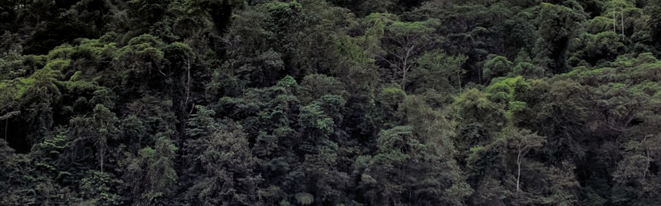
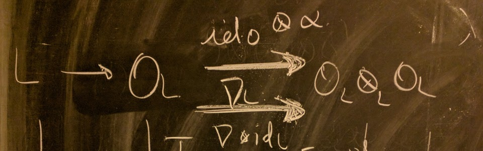

Future Talks
Past Talks
- UCLA, Birational Geometry Seminar, September 2024: "On the positivity of Frobenius pushforwards on toric varieties" (Recording)
- VII CLAM, Session: Commutative Algebra and its Interactions, Joao Pessoa, August 2024: "On the positivity of Frobenius pushforwards on toric varieties"
- CCM-UNAM-Morelia, Conference ``Resolution of singularities, valuation theory and related topics, A celebration of the 63rd birthday of Mark Spivakovsky'', August 2024: "On the positivity of Frobenius pushforwards on toric varieties"
- Seminario Nacional de Geometría Algebraica, February 2024: "Sobre la positividad de la imagen directa de Frobenius en variedades tóricas."
- CIMAT, Seminario de Estudiantes de los Posgrados del CIMAT, January 2024: "Sobre diferenciales, Frobenius y normalizaciones de Noether" (Recording)
- CIMAT, Cuarta Escuela Temática en Álgebra y Geometría Algebraica, December 2023: "Midiendo singularidades con Frobenius"
- CIMAT, Coloquio CIMAT-DEMAT, November 2023: "El problema de conexidad de variedades de Fano"
- CIMAT, Seminario CA/AG, October 2023: "On tame ramification and F-singularities"
- CIRM, Singularities Conference,, September 2023: "On tame ramification and F-singularities"
- Johannes Gutenberg-Universität Mainz, Geometry and Arithmetic Colloquium, June 2023: "Centers of F-purity and their behavior under finite covers"
- Cibercoloquio Latinoamericano de Matemáticas, May2023: "Grupos de clases de singularidades F-regulares" (Recording)
- Universität Bielefled, Algebraic and Arithmetic Geometry Seminar, May 2023: "Centers of F-purity and their behavior under finite covers"
- KU Leuven, Number Theory and Algebraic Geometry Seminar, January 2023: "Singularities of determinantal pairs"
- Purdue University, Commutative Algebra Seminar, November 2022: "Centers of F-purity and their behavior under finite covers"
- Universidad de Guadalajara, 55 Congreso Nacional de la SMM, October 2022: "Centros de F-pureza y extensiones finitas." (Recording)
- University of Michigan, Commutative Algebra Seminar, April 2022: "F-singularities of determinantal pairs."
- Princeton University, Algebraic Geometry Seminar, January 2022: "Varieties with ample Frobenius-trace kernel: in the search of a Frobenius-theoretic characterization of projective spaces." (Recording)
- Charmey Switzerland, 11-th Swiss-French workshop in Algebraic Geometry, January 2022: "Varieties with ample Frobenius-trace kernel: in the search of a Frobenius-theoretic characterization of projective spaces."
- EPFL, Groups, Arithmetic & Algebraic Geometry Seminar, May 2021: "On the behavior of stringy motives under Galois quasi-étale covers."
- Yale University, Online Algebraic Geometry Seminar, May 2020: "On the fundamental group of KLT threefold singularities in positive characteristic."
- The University of Oklahoma, Algebra and Representation Theory Seminar (ARTS), May 2020 (via ZOOM): "Fundamental groups of KLT singularities."
- Tohoku University, Conference "Singularities and Arithmetics", February 2020: "Étale fundamental groups of rational KLT threefold singularities in positive characteristic."
- Institut de Matemàtica Universitat de Barcelona, FACARD 2019 Workshop, January 2019: "Tame fundamental groups of purely F-regular pairs."
- Johannes Gutenberg-Universität Mainz, SFB/TRR45 Kolloquium, December 2018: "The USTP property and diagonal F-regularity."
- Intercity BeNeFri Seminar at Université de Neuchâtel, November 2018: "The USTP property and diagonal F-regularity"
- Institut de Mathématiques de Bourgogne-Dijon, Basel-Dijon-EPFL Joint Seminar, October 2018: "Towards a purity-for-torsors theorem for F-regular singularities."
- EPFL, Groups, Arithmetic & Algebraic Geometry Seminar, October 2018: "Arithmetic aspects of strong F-regularity."
- Universidad de Costa Rica, Grupo de Trabajo en Geometría y Topología, August 2018: "Aspectos aritméticos de la F-regularidad fuerte."
- University of Michigan, Commutative Algebra Seminar, October 2017: "Finite torsors over strongly F-regular singularities"
- Universität Osnabrück, Oberseminar Algebra, October 2017: "Finite torsors over strongly F-regular singularities"
- Johannes Gutenberg-Universität Mainz, SFB/TRR45 Kolloquium, September 2017: "Finite torsors over strongly F-regular singularities."
- Colorado State University, FRAGMENT Seminar, April 2017: "Fundamental groups of F-regular schemes and singularities"
- University of Illinois at Chicago, Algebraic Geometry Seminar, March 2017: "Fundamental groups of F-regular schemes and singularities."
- University of Utah, Commutative Algebra Seminar, September 2016: "Fundamental groups of strongly F-regular singularities via F-signature."
- Universidad de Costa Rica, Departmental Colloquium, June 2016: "F-singularidades y grupos fundamentales locales."